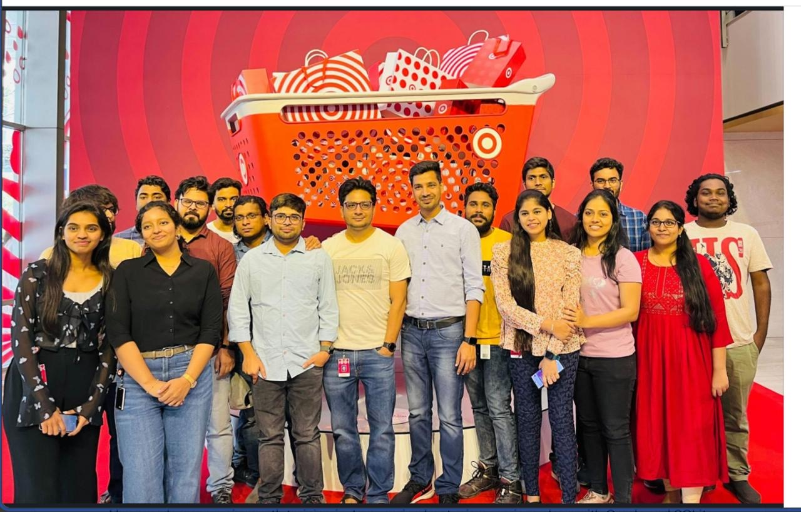
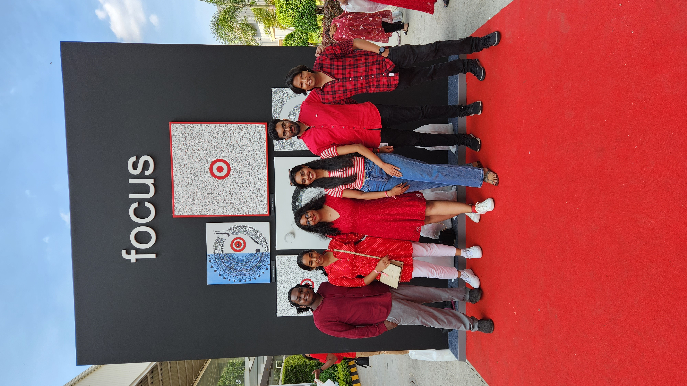
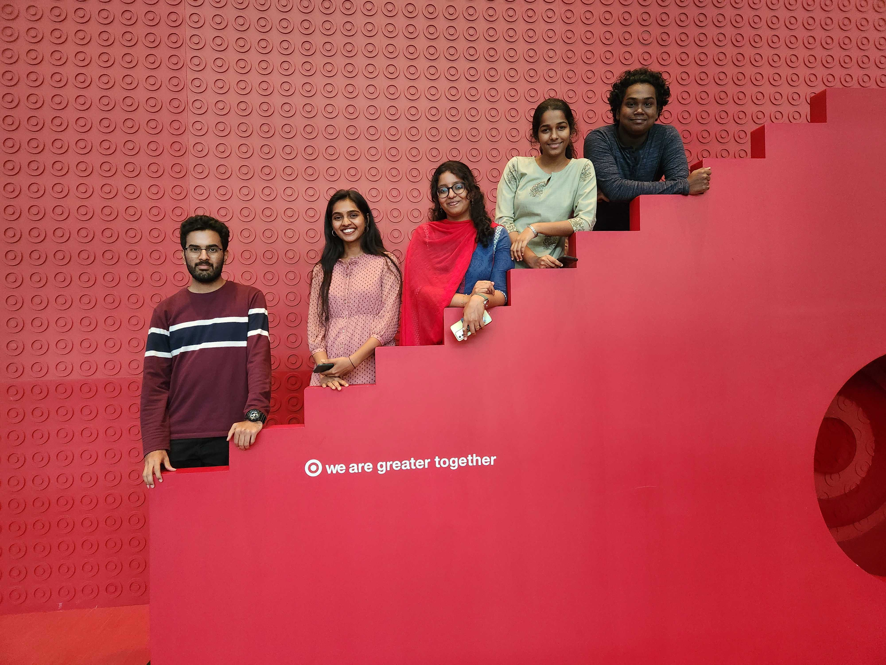
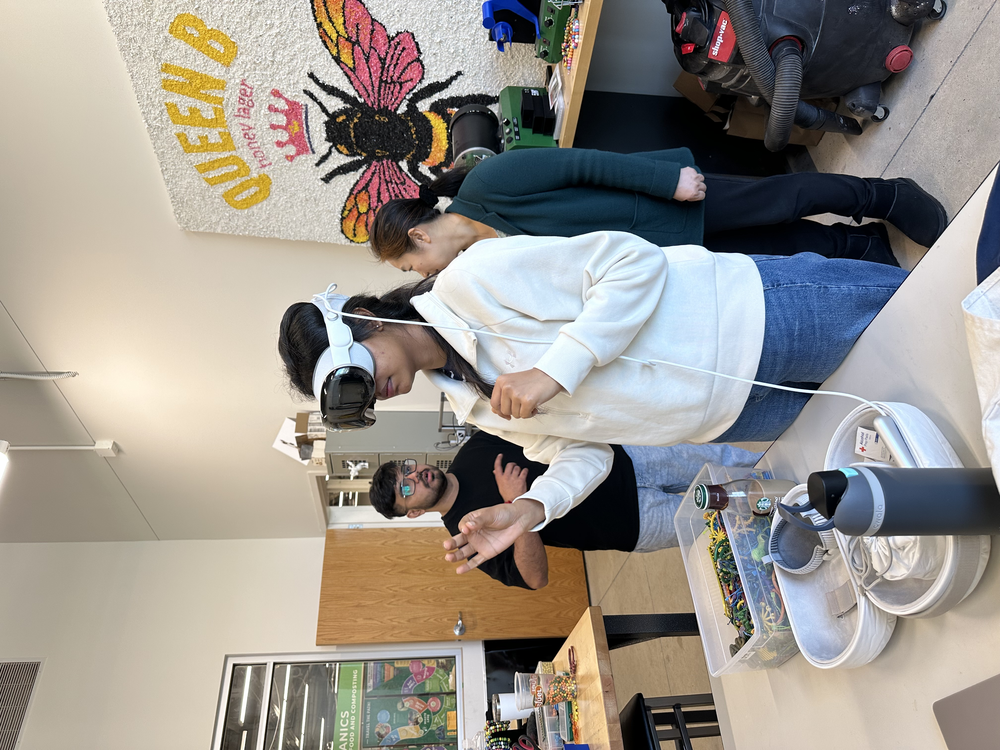
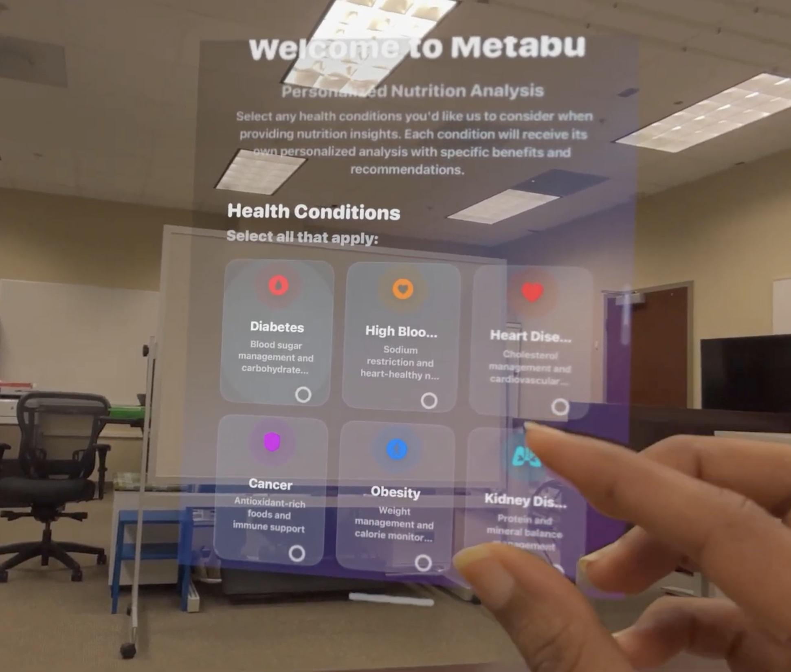
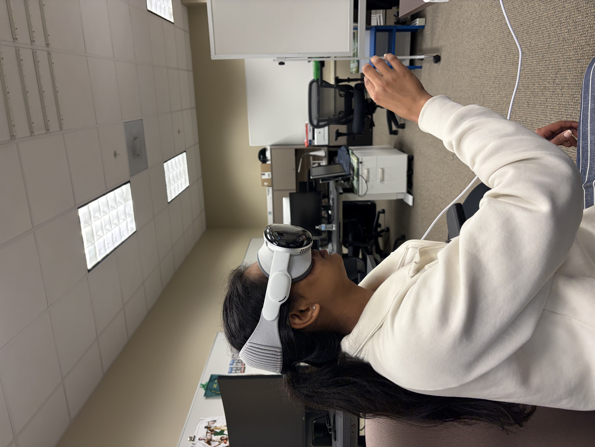
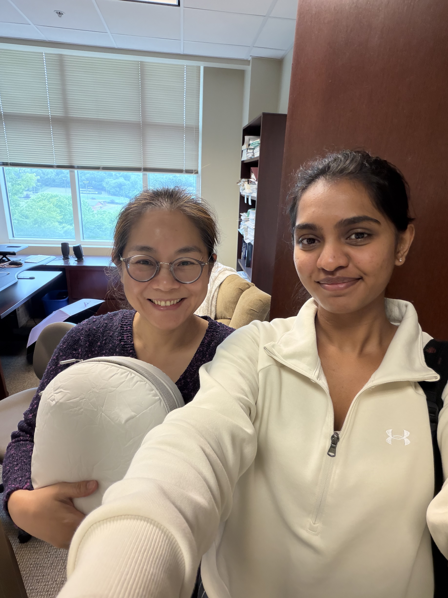

Experience
Target Corporation
iOS App Developer — Aug 2022 – Jul 2024
- As one of two engineers on the Registry sub-team, solely owned development and maintenance of 18 - 20 registry pages on Target’s iOS application serving 1M+ concurrent users.
- Independently delivered the Registry Checklist feature end-to-end, driving 32K+ daily visits and boosting customer engagement. Led UIKit → SwiftUI migration across 9–12 screens with full unit test coverage, reducing crash rates and improving page load time by 18% in a high-traffic production environment.
- Collaborated with product managers, designers and cross-functional engineering teams throughout Agile sprint cycles to deliver customer-facing features and contributed to code testing, reviews, beta releases and production support to ensure application quality and reliability.
- Delivered features across every release cycle while implementing asynchronous RESTful APIs, JSON parsing and MVVM architecture patterns.




UNC Charlotte
Research Engineer, MetaBo Food Vision Pro — Nov 2025 – May 2026
- Developing a spatial computing application for Apple Vision Pro that delivers personalized nutritional recommendations based on user health profiles and disease-specific dietary needs.
- Leveraging a dataset of 35K+ food products stored in PostgreSQL and integrating RESTful APIs to support personalized nutritional recommendations and real-time food analysis.
UNC Charlotte
Instructional Assistant — Aug 2025 – May 2026
- Supported 195 students across three course sections through recitations, office hours, grading and Tableau-based data visualization guidance.
- Assisted with exam preparation and provided individualized academic support to improve student understanding and assignment quality.





PwC
Risk Analyst Intern — Jan 2022 – Jul 2022
- Applied machine learning techniques to analyze 100K+ client records, identifying fraud patterns and supporting risk mitigation initiatives.
- Automated analytical workflows and data validation processes to improve reporting efficiency and decision-making.